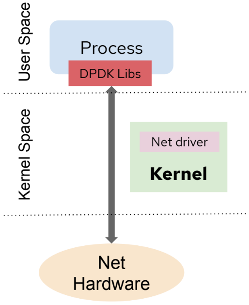

5G Core Context
Before we dive into specific concepts about 5G Core deployments on OpenShift, we need to set the context around the key building blocks that make a Telco Core cluster work. The Telco Core Reference Design Specification (RDS) captures the recommended, tested, and supported configurations for clusters running telco core workloads, including control plane functions (signaling, aggregation, session border controller) and centralized data plane functions like the 5G User Plane Function (UPF).
We won’t be covering every detail here — each topic could be a lab on its own. The goal is to give you enough context to understand the design decisions made in this lab.
MachineConfigPools
A MachineConfigPool (MCP) is a Kubernetes custom resource that groups nodes with a common configuration. In Telco Core clusters, MCPs are central to deployment planning because they allow you to:
-
Segment worker nodes by hardware profile or workload type (e.g., control-plane NFs vs. user data-plane NFs).
-
Associate each group with its own
PerformanceProfileand tuning configuration. Each MCP must be linked to exactly onePerformanceProfile. -
Control the pace and scope of cluster upgrades — MCPs can be paused during an upgrade so that only the control plane is updated first, leaving worker workloads unaffected until the MCP is unpaused.
During an upgrade, careful MCP labeling strategy determines how many nodes are updated concurrently (via maxUnavailable) and in how many maintenance windows. This is critical to meet telco-grade service level agreements (SLAs) without interruption.
Zones and Topology Spread
Telco Core clusters use Kubernetes failure domains to support high availability and faster upgrades. Every node is labeled with topology.kubernetes.io/zone, and OpenShift applies a default TopologySpreadConstraint to all replica constructs (Service, ReplicaSet, StatefulSet) so that pod replicas are spread across zones automatically.
The recommended pattern is to map each MCP to a single distinct zone. This way, all nodes in an MCP can be upgraded simultaneously (assuming sufficient spare capacity and applications SLA requirements) while the zone-based spread ensures that no single zone outage takes down more pods than the PodDisruptionBudget (PDB) allows.
Key considerations:
-
PDBs with zero disruptable pods block node drains — this pattern must be avoided for automated upgrades.
-
Lifecycle hooks (
readiness,liveness,pre-stop) are important for ensuring application availability during node disruption. Thepre-stophook lets a pod complete in-flight operations before being evicted.
NUMA Nodes
In Non-Uniform Memory Access (NUMA) architectures, system memory is divided across NUMA nodes, each corresponding to a set of CPUs with identical latency to the local memory subset. All Telco Core clusters with multi-NUMA nodes are required to deploy the NUMA Resources Operator, which enables NUMA-aware scheduling of pods.
Without NUMA-aware scheduling, the default scheduler only considers the total free resources across the whole node. A pod that requests 6 CPUs could be scheduled on a node with 4 CPUs per NUMA node (8 total), and then fail local admission because no single NUMA node can satisfy the request. The NUMA Resources Operator and its topology-aware scheduler solve this.
Memory allocation policies relevant to NUMA:
-
Strict: Allocation fails if the target NUMA node cannot satisfy the request. -
Interleave: Memory is spread across NUMA nodes in round-robin fashion. -
Preferred: Memory is allocated on the preferred NUMA node when possible, with fallback to another node.
Huge Pages
Physical memory is managed in fixed-size chunks called pages. The default page size on x86_64 is 4 KB. For workloads like DPDK-based User Plane Functions (UPF), pre-allocating larger pages — known as huge pages — reduces TLB pressure and improves throughput.
Huge pages must be configured at node boot time using a PerformanceProfile CR. Pods that require huge pages must explicitly request them in their resource specifications.
You can learn more about huge pages in Linux here.
CPU Pinning
When a process runs in Linux it can be scheduled on any available CPU. For latency-sensitive Telco Core functions — in particular DPDK-based UPF workloads — this non-determinism is unacceptable. CPU pinning reserves a dedicated set of CPUs exclusively for a given workload, preventing interference from other processes and ensuring consistent performance.
In OpenShift, CPU pinning is achieved through a combination of:
-
A
PerformanceProfileCR that definesisolatedandreservedCPU sets on the node. -
Guaranteed QoS pods that request exact CPU quantities and carry the correct annotations to opt into CPU isolation.
Pods that run high performance or latency-sensitive CNFs using DPDK should request multiples of 2 CPUs when the entire physical core (2 hyper-threads) must be dedicated to the workload.
IRQ Load Balancing
Interrupt Requests (IRQs) are signals from hardware or software that require immediate CPU attention. In a tuned Telco Core cluster, the PerformanceProfile CR sets globallyDisableIrqLoadBalancing: false, meaning IRQ balancing remains globally enabled. However, individual pods that require CPU isolation are annotated so that IRQs are steered away from their pinned CPUs. This provides the right balance between platform stability and workload isolation.
Hardware without IRQ affinity support can affect isolated CPUs — all server hardware used in Core deployments must support IRQ affinity.
DPDK
The Data Plane Development Kit (DPDK) is an open source software project that provides a set of data plane libraries and network interface controller polling-mode drivers (PMDs). DPDK moves packet processing from the OS kernel into user space, where an application polls the NIC directly in a tight loop — eliminating interrupt overhead and achieving very high packet rates with low latency.
In Telco Core, DPDK is primarily used in User Plane Function (UPF) pods, which require maximum network throughput.

In OpenShift, a DPDK application can be given direct access to an SR-IOV Virtual Function (VF) via the vfio-pci driver. Red Hat provides a DPDK builder image to simplify building DPDK-based applications.
Starting with OpenShift 4.17, rootless DPDK pods are supported: a conformant pod can use a tap device to bridge DPDK traffic to the kernel without requiring root privileges, reducing the security footprint.
SR-IOV
Single Root I/O Virtualization (SR-IOV) allows a single physical NIC (the Physical Function, or PF) to be divided into multiple Virtual Functions (VFs), each of which can be assigned directly to a pod. This gives pods near-native network performance without sharing the kernel networking stack.
SR-IOV VFs can be exposed to pods in two modes:
-
netdevice driver: A regular kernel network device visible inside the pod’s network namespace. -
vfio-pci driver: A character device for use by DPDK applications running in user space.
In Telco Core, SR-IOV is the primary mechanism for high-throughput secondary networks (e.g., user-plane DPDK traffic, signaling interfaces). The SR-IOV Network Operator manages the provisioning of VFs and the injection of network device information into pods.
The validated physical network configuration uses two dual-port NICs: one shared between the primary CNI (OVN-Kubernetes) and MACVLAN/IPVLAN traffic, and one dedicated to SR-IOV VF-based pod traffic. OpenShift Container Platform supports a range of SR-IOV capable network interface controllers.
Dual-stack IPv4/IPv6 Networking
Telco Core clusters are required to operate in dual-stack mode (IPv4 primary, IPv6 secondary). The cluster network plugin is OVN-Kubernetes, which is mandatory for IPv6 support.
Key networking characteristics of the Core reference design:
-
A Linux bond interface (
bond0) in active-active IEEE 802.3ad LACP mode ties together two NIC ports; the top-of-rack switch must support mLAG. -
VLAN interfaces are created on top of
bond0, including one for the primary CNI. -
MACVLAN and IPVLAN interfaces provide secondary networks for pods. They cannot co-exist on the same base interface because both rely on the kernel’s
rx_handlermechanism, and only one handler can be registered per interface at a time.

-
Pod egress is managed through the kernel routing table using OVN-Kubernetes
routingViaHostmode, which allows static routes configured via the NMState Operator to steer traffic correctly. -
MetalLB provides load-balancing for services, operating in BGP mode only for Telco Core use models.
All clusters are expected to be fully disconnected — no access to the public internet at any point in the cluster lifecycle.
Persistent Storage
Telco Core applications require highly available persistent storage. The reference solution is OpenShift Data Foundation (ODF) deployed in external mode, where the ODF software connects to a dedicated Red Hat Ceph Storage cluster running outside of the application OpenShift cluster.
External mode is preferred in Core deployments for several reasons:
-
OpenShift Container Platform and Ceph can be updated independently.
-
The storage infrastructure can be shared across multiple OpenShift clusters in the same region.
-
Operations responsibilities for storage and platform are cleanly separated.
ODF supports separation of storage traffic using secondary CNI networks. Storage network traffic should be isolated on a dedicated VLAN and must not be routable from other cluster networks.
Service Mesh
Telco Core Cloud-Native Functions (CNFs) typically communicate with each other over a service mesh. A service mesh provides:
-
Mutual TLS (mTLS) for secure inter-service communication.
-
Traffic management, retries, and circuit breaking.
-
Observability — metrics, tracing, and logging across services.
The selection of a Service Mesh implementation (e.g., Red Hat OpenShift Service Mesh) and its specific configuration is outside the scope of the Core RDS, but the Core cluster topology assumes a Service Mesh is present. The implementation must account for the additional latency and resource overhead introduced by the sidecar proxy model.